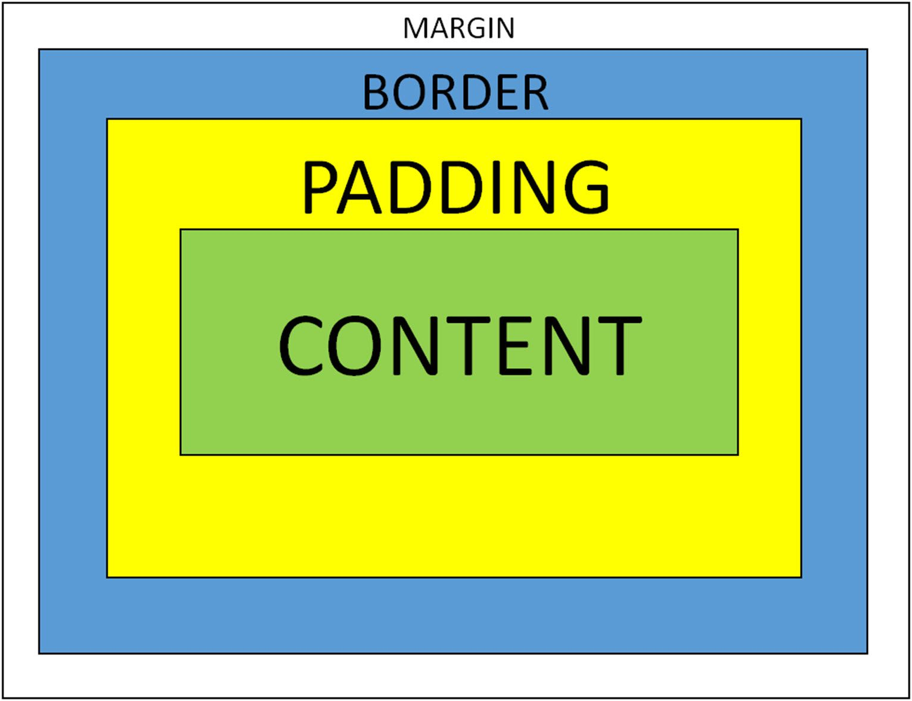
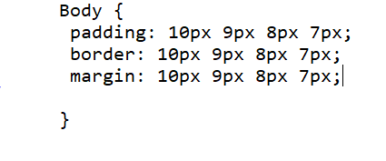

Question: What is the difference between Margin, Padding, and Border?
Answer: This picture shows the content in the middle, which can the word,
sentence,
picture, or whatever product you want. The content is always enclosed in an invisible box
(unless styled to
be shown). The "padding" is the space between the border/line
of that
invisible box. The "margin" is the space outside of that border.
Analogy: Think of an egg. An egg's content is the egg itself. The border of
the egg is the eggshell.
The padding would be described as the
space between the egg and the shell (inside of the eggshell)
and the margin would be the space between the
outer eggshell and the things
around it (egg carton,
human hands, etc.)
How does it work?
It's much simpler than you think. Don't worry about other devices for now.
Let's get on with the basics. In CSS the commands for "Margin", "Padding"
and "Border" are Margin,
Padding and Border.
If you have a look at this code snippet here:
You can see these commands. the size 10 represents the top and as the numbers regress, you would
move clockwise along the box i.e. 10 is top, 9 is right, 8 is bottom
and 7 is left.
the px you see beside the numbers represent "pixels" which is a unit of measure.
The border command however doesn't change spacing, but the thickness of the
border: